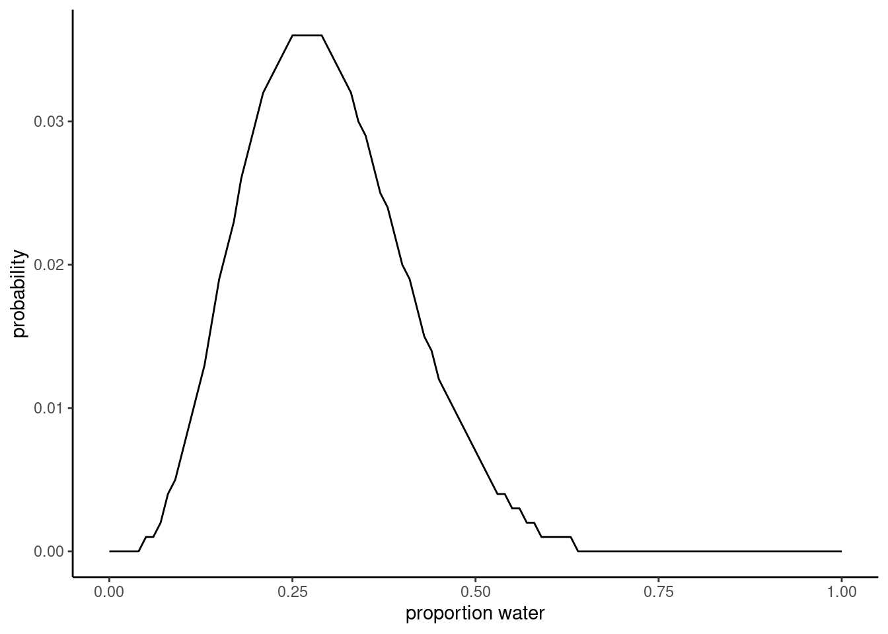
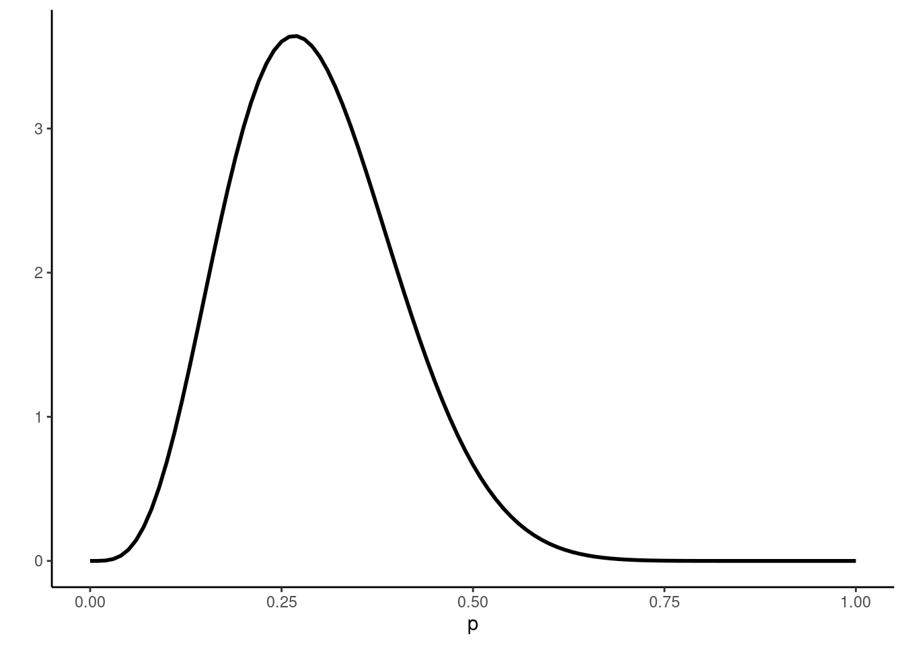
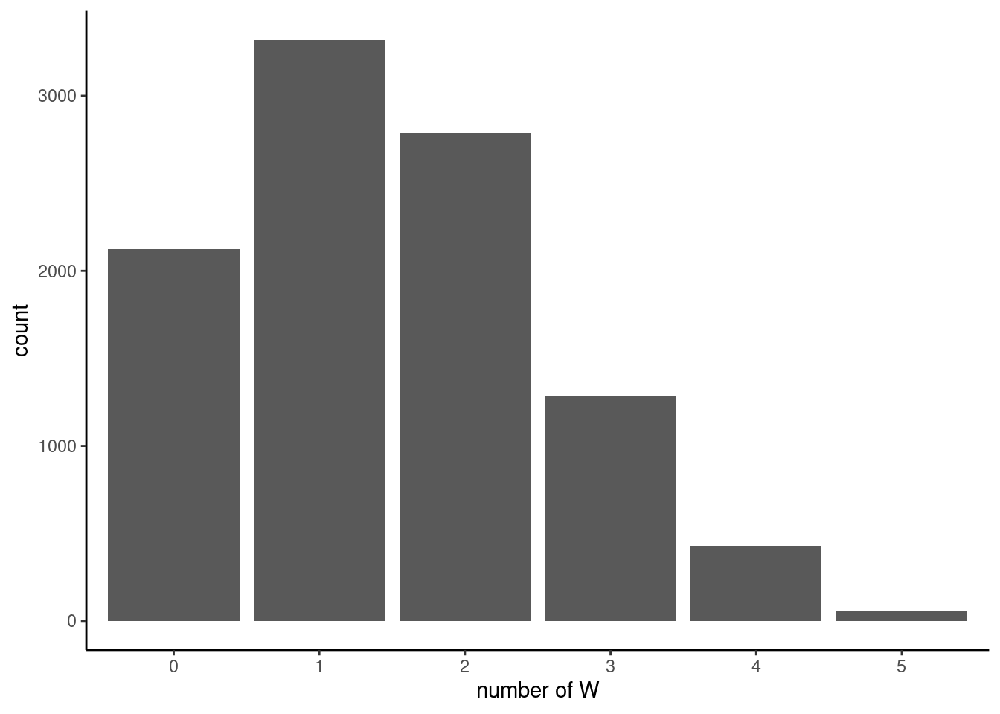
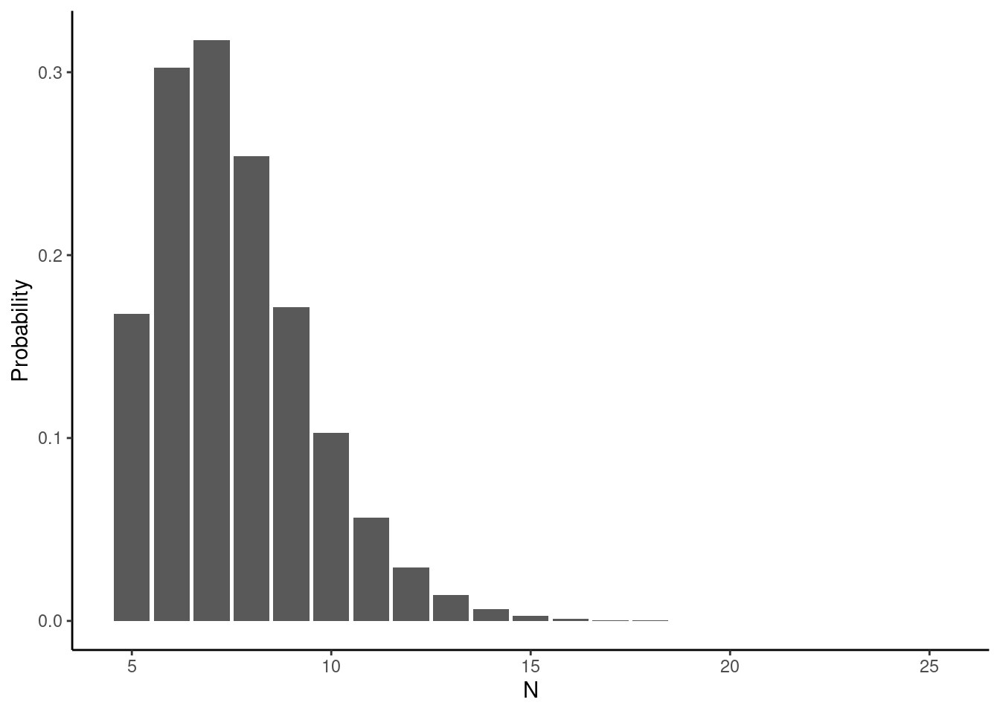

Homework - Week 01
Question 1: Suppose the globe tossing data (Lecture 2, Chapter 2) had turned out to be 4 water and 11 land. Construct the posterior distribution.
# define how many tosses were W & L
w <- 4
l <- 11
# define p, every 0.01 between 0,1
p <- seq(0, 1, by = 0.01)
# function to compute posterior by every p
compute_posterior <- function(W, L, poss){
ways <- sapply(poss, function(q) (q*4)^W * ((1-q)*4)^L)
post <- ways/sum(ways)
data.frame(poss, ways, post = round(post,3))
}
# compute posterior for our data
posterior <- compute_posterior(w, l, p)
# visualize posterior
ggplot(data = posterior) +
geom_line(aes(poss, post)) +
theme_classic() +
xlab("proportion water") +
ylab("probability")
NOTE: Bonus answer in solutions is somewhat key to understanding next answer. This specific problem, where you have a continuous value bounded by 0,1 with an infinite number of p, follows a beta distribution. Because the beta distribution is defined, you can instead just use that mathematical equation to come to the same conclusion as above.
ggplot() +
stat_function(fun = function(x) dbeta(x, 4+1, 11+1), color = "black",
size = 1) +
theme_classic() +
xlab("p") +
ylab("")
Question 2: Using the posterior distribution from 1, compute the posterior predictive distribution for the next 5 tosses of the same globe. I recommend you use the sampling method.
# sample our posterior (beta distribution with 4 W, 11 L)
n <- 1e4
post_samples <- rbeta(n, 4+1, 11+1)
# sim globe function
sim_globe <- function(p, N){
sample(c("W", "L"), size = N, prob=c(p, 1-p), replace = T)
}
# simulate posterior predictive distribution for next 5 tosses of the globe
# how many of the 5 tosses will = W? Tested 1e4 times
pred_post <- sapply(post_samples, function(p) sum(sim_globe(p, 5)=="W"))
# create table that counts number of incidences of each option (i.e., how many times will 0 W appear, 1 W, 2 W, 3 W, 4 W, 5 W?)
tab_post <- table(pred_post)
pred_post_df <- as.data.frame(tab_post)
ggplot(pred_post_df, aes(as.factor(pred_post), Freq)) +
geom_col() +
theme_classic() +
xlab("number of W") +
ylab("count")
NOTE: Can also use rbinom() function instead of sim_globe() since there are only two possible outcomes.
Question 3: Use the posterior predictive distribution from 2 to calculate the probability of 3 or more water samples in the next 5 tosses.
We know that \[ p = \frac{ways}{sum(ways)} \] Therefore, count the incidences of 3, 4, 5 in posterior predictive distribution from 2 and divide by total number of ways (1e4)
p_threeplus <- (sum(pred_post_df[which(pred_post_df[,1]==3 | pred_post_df[,1]==4 |
pred_post_df[,1]==5),2]))/n
print(paste0("p = ", p_threeplus))[1] "p = 0.1848"Question 4: Suppose you observe W = 5 water points, but you forgot to write down how many times the globe was tossed, so you don’t know the number of land points L. Assume that p = 0.7 and compute the posterior distribution of the number of tosses N. Hint: Use the binomial distribution.
Before, we were solving for p using \[ p^W(1-p)^L \] Which was a beta distribution because p was a continuous variable bound between 0,1. Now we want to solve for N, with W and p. We have a success/fail dataset, with a probability of success, therefore we use the binomial distribution. We need to calculate the probability of 0-5 N’s resulting in 5 successes (W).
# N & L = unknown
W <- 5
p <- 0.7
N_max <- 25
lst <- seq(W, N_max, by = 1)
# calculate binomial distribution for each N between lower bound (W) and upper bound (N_max) with p = 0.7
x <- sapply(lst, function(x) dbinom(W, x, p))
ggplot(data.frame(data = x, N = W:N_max), aes(x = N, y = x)) +
geom_col() +
labs(y = "Probability", x = "N") +
theme_classic()